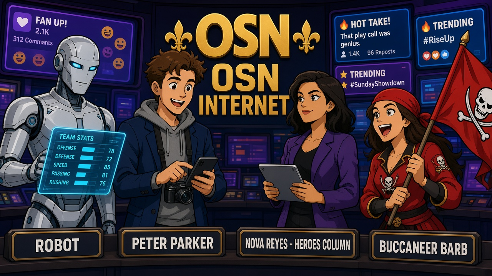
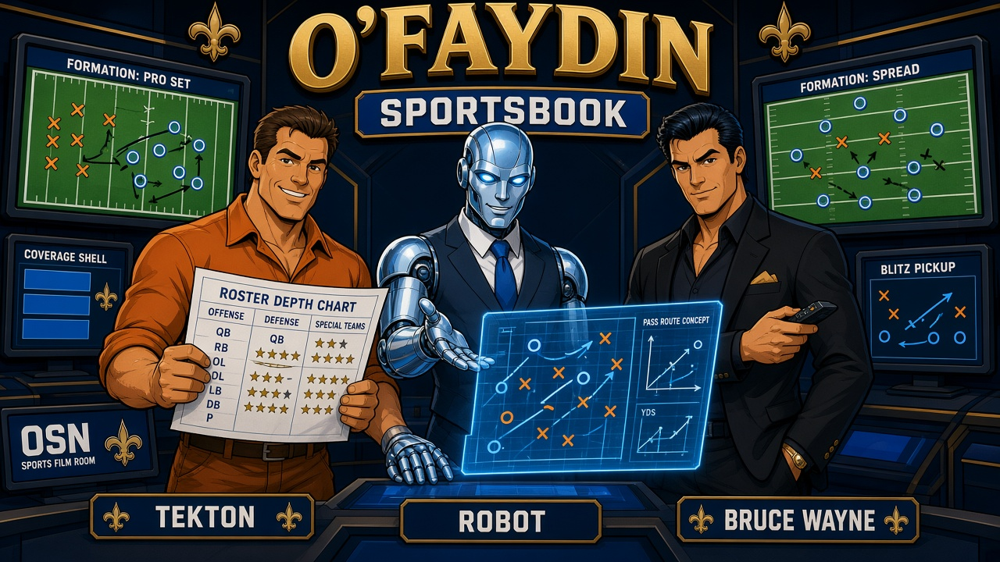

Every OSN sports graphic used on these pages: the desk portraits and the play diagrams.
Desk portraits
The newsroom staff portraits used on the Sports Universe page.
The HubCommissioner Remy Lafitte and Tex Holloway, Rules Chief.OSN TVDragon, Bruce Wayne, Alien, and The Oracle.OSN RadioDragon, Alien, and Buccaneer Barb.OSN NewspaperPeter Parker, Clark Kent, and Silas Forgewright.

OSN InternetRobot, Peter Parker, Nova Reyes, and Buccaneer Barb.Fleur-de-Lis ChronicleClark Kent, Silas Forgewright, and Corvin Blackbridge. The archive.

O'Faydin SportsbookTekton, Robot, and Bruce Wayne. Matchups and results.The O'Faydin ScrollKamryn Gholston, The Oracle, Peter Parker, and Dragon.Black Flag LedgerKamryn Gholston, Corvin Blackbridge, and Alien. The fact-checking desk.
Play diagrams
The play diagrams used on Coach Blake's 8-0 Team page, from the OSN playbook files.
Base formation and holesHB 45 DiveHB 44HB 44 TossFB Belly G Right (off the ZB)The Delaware Wing-T Belly.